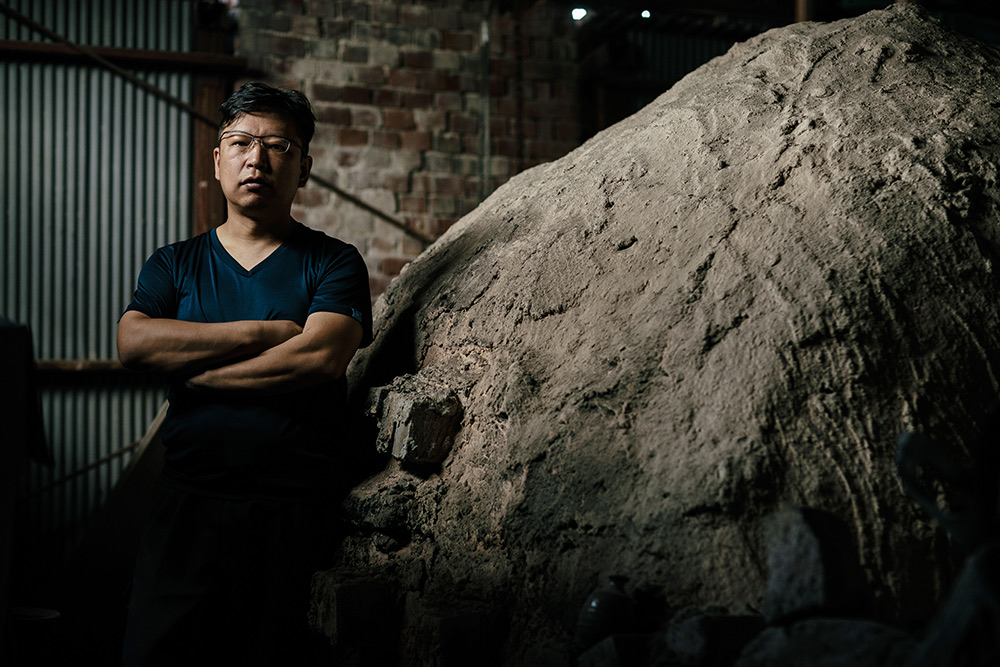

Mori Taiga

Je veux être un céramiste voyageur.
J'aime sincèrement me rendre en de nouveaux endroits.
Et à travers la création de Bizen-yaki, j'aime changer ma façon de travailler,
reconsidérer ce que peut être la Bizen-yaki et basculer vers de nouvelles perspectives.
C'est cela aussi, un voyage.
Alors que le monde évolue jour après jour, je continue d'avancer — pour laisser les traces d'un voyage qui n'appartient qu'à moi, vivant dans le présent.
PROFIL
Biographie
・Héritier du four de son grand-père Furai
・Études de sculpture céramique sous la direction de Gyokushu Kimura
Okayama Tenmaya / Matsuya Ginza (8 fois) / Kobe Daimaru (3 fois) / Hakata Daimaru (2 fois)
Exposition et conférence au Musée national de la Céramique
Exposition collective à la succursale new-yorkaise de l'Urasenke
Exposition à trois artistes Japon-Chine au Musée ethnique du mont Tiantai (Chine)
Exposition au Vietnam
Co-fondation de la galleryKai (Imbe 1506-1)
Exposition à ART FAIR PHILIPPINES 2020
Exposition à ART NAGOYA
Voyages
Partir dès que le temps le permet
- Népal / Bhoutan / Turquie / Thaïlande / Allemagne (1 exposition)
- France (3 expositions) / Chine (4 expositions) / Cambodge / Vietnam (1 exposition)
- Costa Rica (1 exposition) / Corée (1 exposition) / Taïwan (4 expositions) / Mexique, et plus encore
Résidences artistiques
- France (2013) / Ville de Suzu (2018) / Musée Onggi, ville de Jeju, Corée (2019)
Distinctions
- 2003 — Prix du Nouveau Talent, International Art Future (Sculpture)
-
2011 — Sélectionné pour l'Exposition « L'art du Chanoyu » (Shimane)
Exposition de la Fondation des céramiques — Prix de la Fondation Pola pour la promotion de la culture traditionnelle
Sélectionné pour l'Exposition de la section Chugoku de l'Association japonaise des Arts Kogei (2009–2010)
Sélectionné pour l'Exposition d'art de la préfecture d'Okayama (2009–2010)
Ma définition de la Bizen-yaki
Je définis la Bizen-yaki comme une céramique créée dans la région de Bizen, cuite à haute température entre 1 200 et 1 300 °C, à partir d'argiles et de minéraux de haute qualité provenant des environs de la région de Bizen, dans la préfecture d'Okayama.